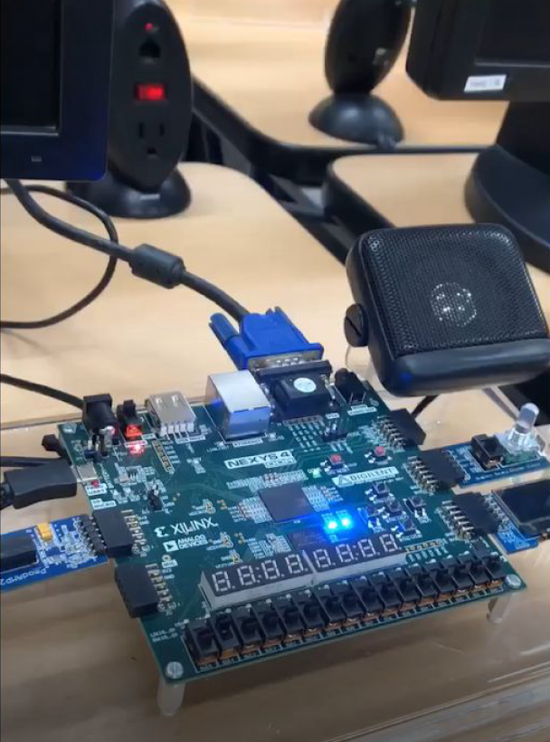

Programmed Verilog HDL scripts in Xilinx Vivado to design a FPGA based dual mode stopwatch that can be controlled to count up or down from a pre-set time
Enhanced overall functionality of the design by implementing a blinking multicolourd LED and incorporating an animated graphical output onto a computer monitor using programmed Verilog HDL scripts and a VGA interface

